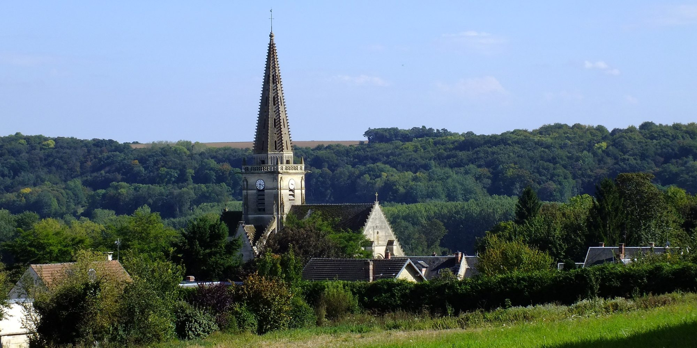
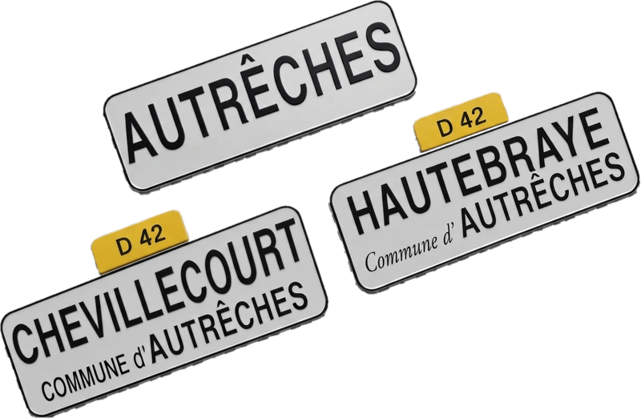

Un village de l'Oise
Son village, son histoire : château, école, guerres, chemins et cartes postales anciennes.
Les 2 GuerresL'horloge voyageuseChants de GuerreRésistance en 1943Janvier 1915Octobre 1914Le clocher détruit en 1914Le corps d'un poilu
Dites-nous son nom : votre souvenir complétera la mémoire du village.
Voir les photos de classe